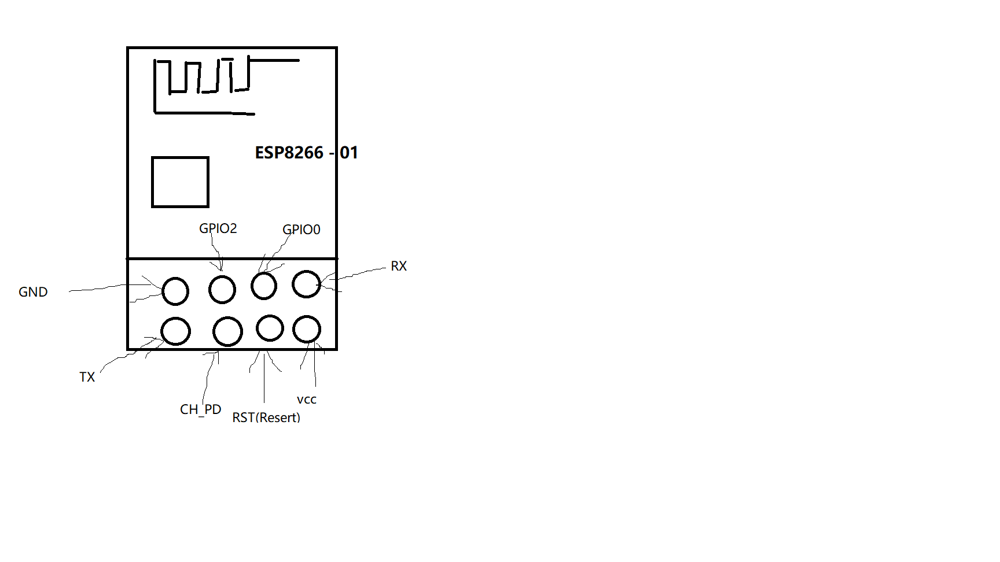
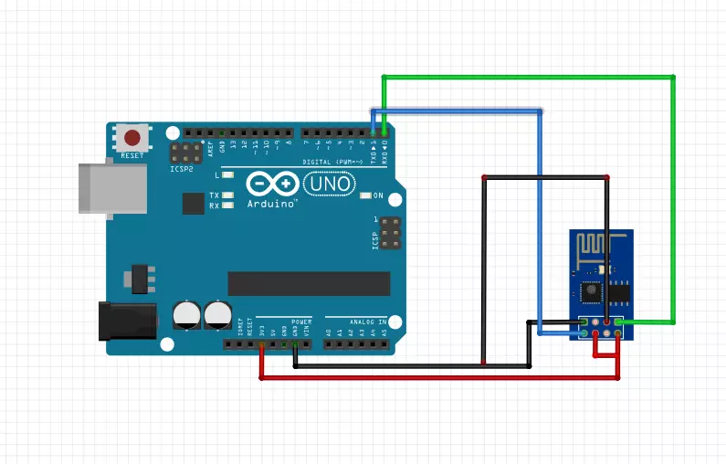
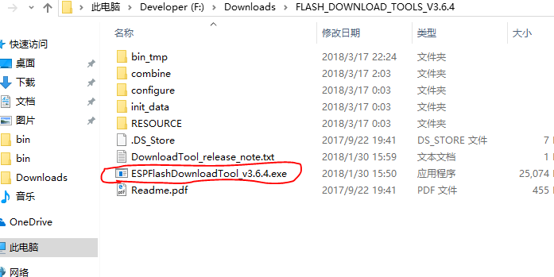
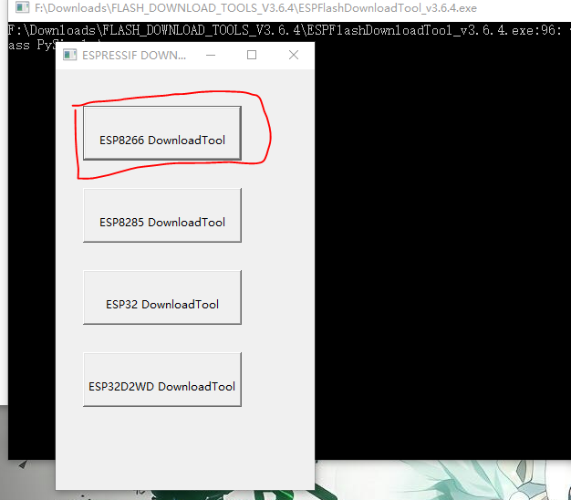
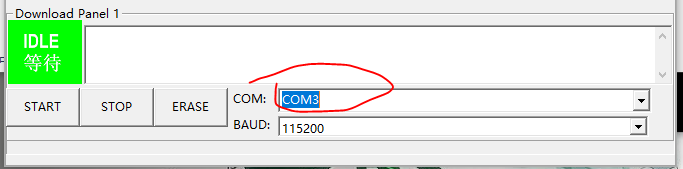
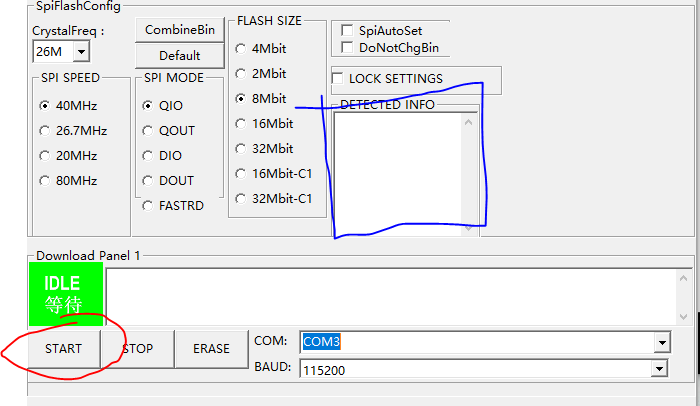
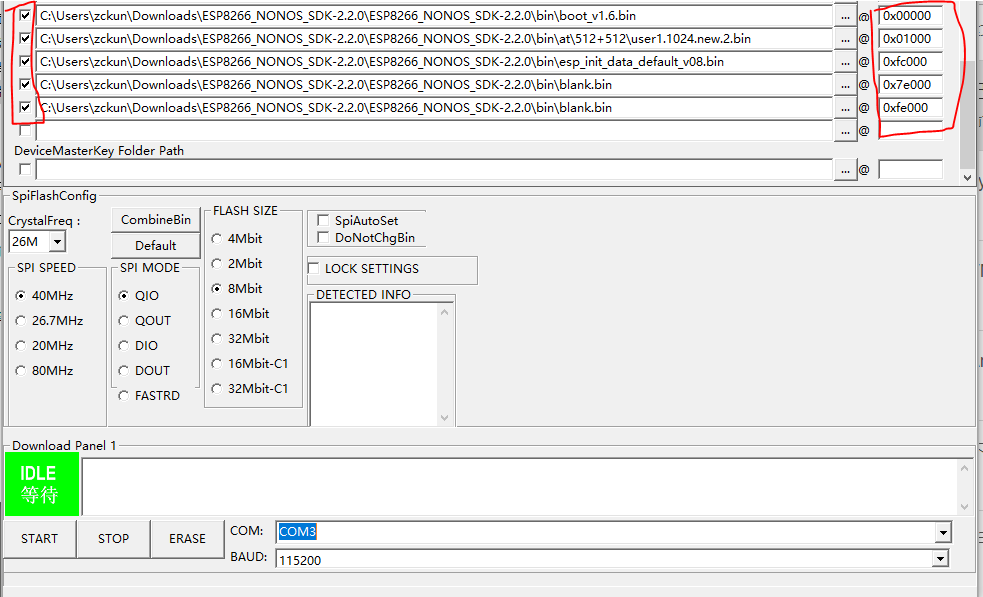

记 ESP266-01 刷写AT固件
前言
我这个人什么都会折腾一点，去年就接触了 Arduino、Respberry Pi、Bad USB、ESP8266 等这些和单片机有关的东西，由于自己的技术不足，所以在使用 esp8266 模块的时候遇到点问题，烧了程序进去，导致at指令不能用，因为后来觉得at指令好用就想恢复。百度了很久无果，所以就放弃了这东西，正好今年无意翻出来了，就去官网看了一波文档，总算完成了。
正文
首先将esp8266连上你电脑
我这里用的 arduino，或者用 USB转TTL。
esp8266 引脚如图，我也懒得去网上找了，自己画了个 Orz:

esp8266 连接 arduino:

接着安装官方推荐的一些工具
接下来开始烧写AT固件
打开FlashDownloadTools

然后单击 “ESP8266 DownloadTool” 按钮

然后选择你arduino端口，我这里是 COM3。修改BAUD为115200(如果你修改过的话就按你修改的那个值来)

之后单击 START 按钮，如果没问题 “DETECTED INFO” 窗口会出现你模块的信息，按照信息将 “SPI MODE”、”FLASH SIZE” 选择好，”SPI SPEED” 默认即可

之后按照图片选择AT固件以及一些其他东西，右边小框是地址，左边的长框是文件路径，别忘了打勾，一共4个文件，blank.bin文件要烧到两个地址里来初始化系统和用户数据。一切就绪后再次单击START按钮既可
